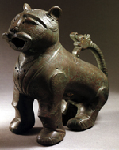
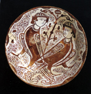

Ismaili Imamat History: From the time of the division in the Shi'a community
The foundation of the Ismaili Fatimid caliphate in Ifriqiya (Tunisia) in the year 909 was the culmination of a long development, directed by the descendants of Imam Ismail and sustained by a commitment to promote the Islamic ideal of social justice and equity.
Much has been written about the Fatimid caliphate, one of the most successful in overcoming the endemic threat of despotism and anarchy, and much noted for its religious tolerance. The geographer al-Muqaddasi has written of the harmony among different religious groups in the Fatimid domains, which, at the peak of the caliphate, centred in Egypt, extended westward to North Africa, Sicily and other Mediterranean islands, and eastward to the Red Sea coast of Africa, Palestine, Syria, the Yemen and the Hijaz. 
|
Marble water jar and basin 11th Century, Egypt Museum of Islamic Art, Cairo (From the catalogue of the exhibition Schatze der Kalifen held at the Kunstlerhaus in Vienna, Austria.) |
The Ismaili view of history, which accorded due respect to the great monotheistic religions of the Abrahamic tradition, provided the intellectual framework for the participation of the followers of different faiths in the affairs of the Fatimid state. Within the Fatimid judiciary, as in other branches of government, appointments were based on merit. In elevating a Sunni jurist to the post of chief qadi, Imam-caliph al-Hakim praised the appointee's sense of justice and calibre as the determining factors. The Fatimid tolerance towards non-Muslims has also been well attested. Christians and Jews, as much as Muslims of either branch, were able to rise to the highest echelons of state office on grounds of competence.
|
Bronze lion 11th-12th Century, Egypt Museum of Islamic Art, Cairo (From the catalogue of the exhibition Schatze der Kalifen held at the Kunstlerhaus in Vienna, Austria.) |
The foundation of the Fatimid caliphate, as the first major Shia state, provided the first opportunity for the promulgation of an Ismaili school of jurisprudence. Based on Shia principles, it was formulated and implemented with due deference to the Fatimids' universalist philosophy of religious tolerance. In the same spirit, the Fatimids pioneered the practice of encouraging private patronage of mosques and other pious buildings by Muslims of different persuasions. Their policy reflected the historical fact of a plurality of pious ways rather than a monolithic interpretation of the faith.
The Fatimids generously encouraged intellectual pursuits. Natural and philosophical inquiry enjoyed a free rein, and thrived. The culture of unhindered scientific thought attracted the finest minds of the age to the Fatimid court, whatever their religious persuasions: mathematicians and engineers like Ibn Haytham, astronomers like Ali b. Yunus; physicians like al-Tamimi, al-Israili and Ibn Ridwan. Nor was the scientific culture the preserve exclusively of men of letters and science, as efforts were made to popularise their learning. Al-Azhar, the chief Cairo mosque built by Imam/caliph al-Muizz in 972, was also a great centre of learning, generously endowed by the Fatimid Imam/caliphs. dar al-'Ilm, the House of Knowledge, established in Cairo in 1005 by Imam/caliph al-Hakim, was the first mediaeval institution of learning, a precursor of the modern university, which combined in its programme of studies a full range of the major academic disciplines, from the study of the Quran and Prophetic traditions through jurisprudence, philology and grammar, to medicine, logic, mathematics and astronomy. The institution was open to followers of different religions.
|
Lustreware harpies bowl 11th Century, Egypt Museum of Islamic Art, Cairo (From the catalogue of the exhibition Schatze der Kalifen held at the Kunstlerhaus in Vienna, Austria.) |
In the last decade of the eleventh century, the Ismaili community suffered a schism over the succession to Imam/caliph Mustansir billah (d.1094). One section of the community followed his youngest son al-Mustali. The other gave its allegiance to his eldest son Imam Nizar from whom the Aga Khan, the present Imam of the Ismailis, traces his descent. The seat of the Nizari Imamat then moved to Iran where the Ismailis had succeeded in establishing a state comprising a defensive network of fortified settlements. With its headquarters at Alamut, in Northern Iran, the Ismaili state later extended to parts of Syria. Though there were continual wars among Muslims over issues of power and territory, this period of Muslim history does not paint a simple canvas of one camp of enemies facing another. The military equation was further complicated by the presence of the Crusaders. Shifting alliances among all these different groups was the normal order of the times.
In spite of their continual struggle to keep powerful enemies at bay, the Ismailis of the Alamut state did not forsake their intellectual and literary traditions. Their fortresses housed impressive libraries whose collections ranged from books on various religious traditions and philosophical and scientific tracts to scientific equipment. Nor did the hostile environment force them to abandon their liberal policy of patronage to men of learning which benefited Muslim as well as non-Muslim scholars and scientists. Their settlements were a generous sanctuary for waves of refugees, irrespective of their creed, fleeing the Mongol invasions. It was these invasions by the Mongol hordes which, in 1256, brought about the destruction of the Ismaili state.
Baghdad, the Abbasid capital, fell a much easier prey to the Mongols, whose advances further west were checked by the Mamluk rulers of Syria and Egypt. The Syrian Ismailis were thus spared the Mongol atrocities. Many of the Ismailis of the Iranian lands found refuge in Afghanistan, the Oxus basin in Central Asia, China and the Indian subcontinent, where large Ismaili settlements had existed since the ninth century.
The Ismailis who remained in the Iranian lands had to protect themselves from hostile dynasties. Given the esoteric nature of their own tradition, aspects of which they shared with communities among both Sunni and Shia Muslims, Sufi tariqas provided welcome hospitality to the Ismailis. Though the Sufi orders then prevalent in the Iranian lands were predominantly Sunni, virtually all of them held the Prophet's family in high esteem. During this difficult phase, the Ismaili mission retained its resilience. Under the direction of each succeeding Imam, new centres of activity were established in the Indian subcontinent, Afghanistan, the mountainous regions of the Hindukush, Central Asia and parts of China.
The advent of Shia rule in fifteenth century Iran led to a number of opportunities for the Ismailis and other Shias. In time, the Shia Safawid rulers cultivated friendly relations with the Ismaili Imams, one of whom had married a Safawid princess. Later, under the Zands, the Ismaili Imams played an important role in governing the province of Kirman.
The Modern Period
As a result of migratory movements and mission activities in its history, the Ismaili community has come to settle in a wide spread of countries across the globe. Like the Muslim ummah as a whole, it represents today a rich diversity of cultures, languages and nationalities. Its traditions fall within four broad geographic and ethnographic groups: Central Asian, Persian, Arab and South Asian, all of them united by their allegiance to their present, 49th hereditary Imam, Prince Karim Aga Khan. Settlements in Africa primarily comprise Ismailis of Indian sub continental origins, while recent settlements in the West comprise Ismailis from all the above traditions.
The modern phase of Ismaili history began when the forty-sixth Imam, Aga Hasan Ali Shah, emigrated to India in the early 1840's. He was the first Imam to bear the title of Aga Khan, bestowed by the Persian emperor, Fath Ali Shah. He settled in Mumbai (Bombay) in 1848, where he established his headquarters. The event had an uplifting effect on the community in India and on the religious and communal life of the whole Ismaili world. It helped the community in India to gain a greater sense of confidence and identity as a Shia Muslim community, and to lay the foundations for its social progress. It also marked the beginning of an era of more regular contacts between the Imam and his widely dispersed followers. Their deputations came to Mumbai to receive the Imam's guidance from as far afield as Kashgar in China, Bokhara in Central Asia, all parts of Iran, the Middle East, the African coast and its then narrowly settled hinterland.
Aga Khan I died in 1881. He was succeeded to the Imamat by his eldest son Aga Ali Shah. Imam Aga Ali Shah assumed the title of Aga Khan II, and was honoured with the courtesy of His Highness, first granted to his father, by the British government. Building on the initiatives of his father, Aga Khan II set about the long-term task of social development of the community, with emphasis on education. He established a number of schools in Mumbai and other Ismaili centres. On the broader front, he served on the Bombay Legislative Council and was elected President of the Muslim National Association in recognition of his educational and other philanthropic efforts for the benefit of Indian Muslims generally, Shia and Sunni alike.
Aga Khan II passed away in 1885 after being the Imam for only four years. The institution of the Imamat then devolved upon his son Sultan Mahomed Shah by Shams al-Mulk, a granddaughter of the Persian monarch, Fath Ali Shah. At the time of his accession, Imam Sultan Mahomed Shah, Aga Khan III, was under eight years old. At the age of nine he received the honorific title of His Highness from Queen Victoria.
 Gateways
Gateways